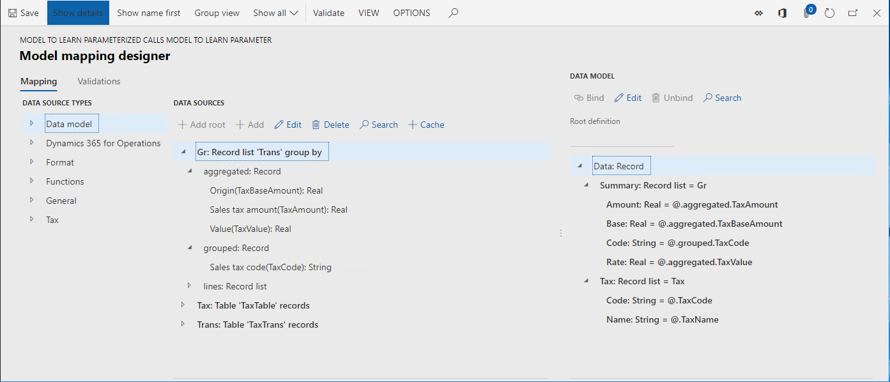
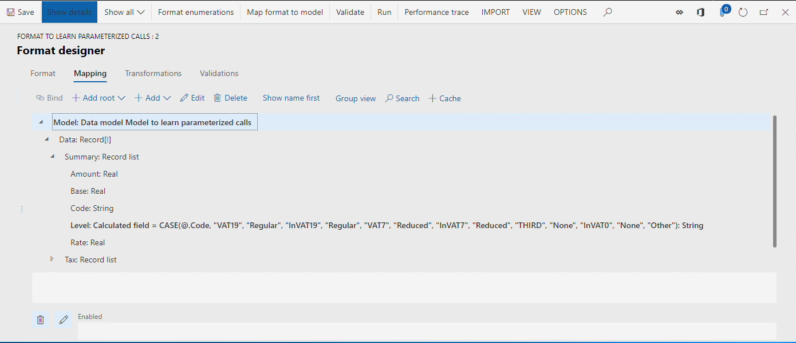
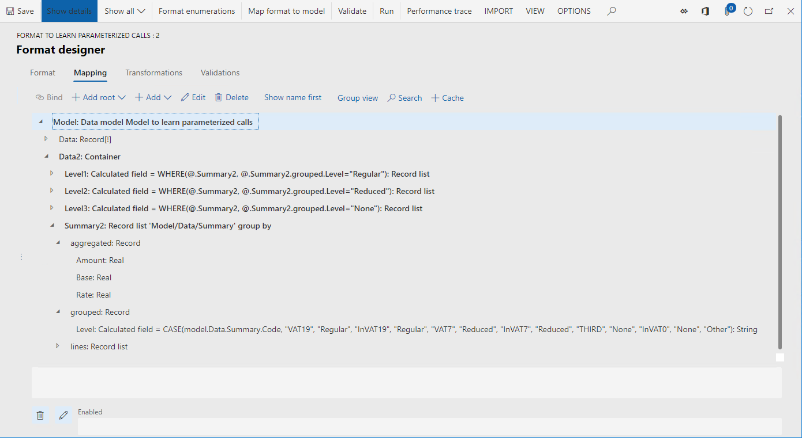
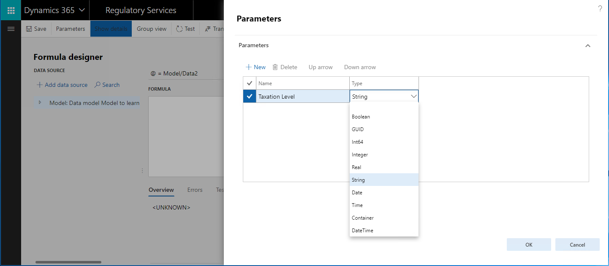
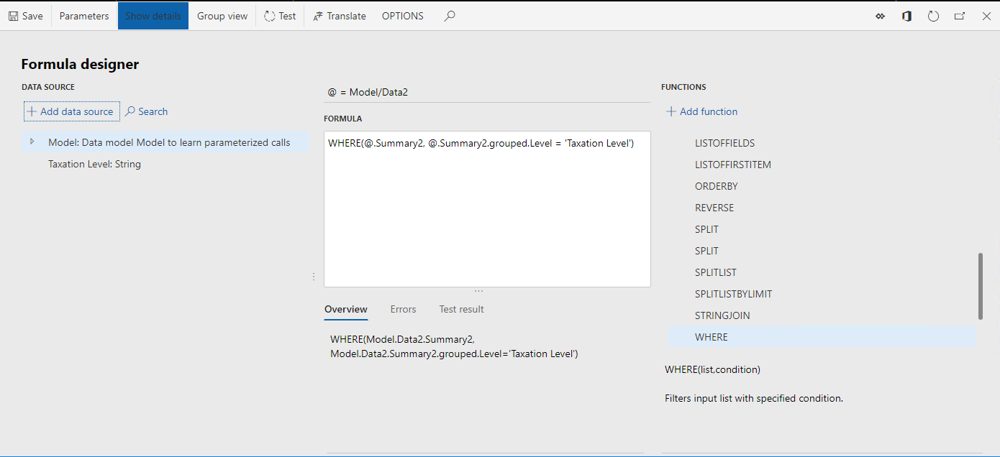
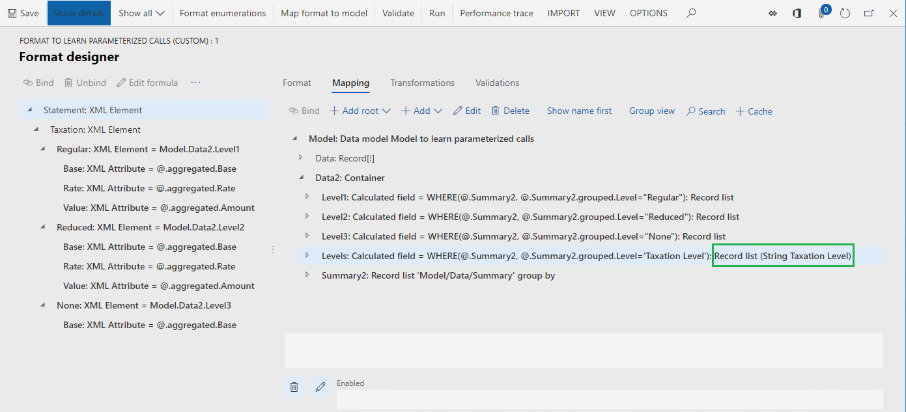
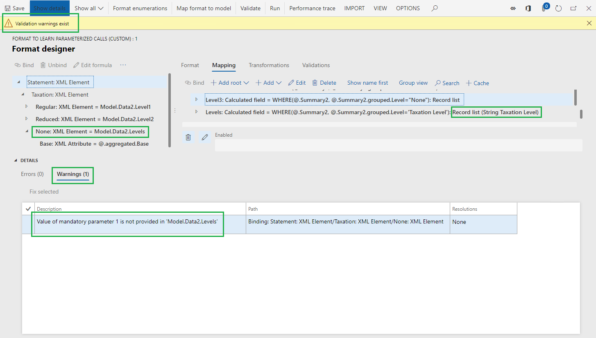
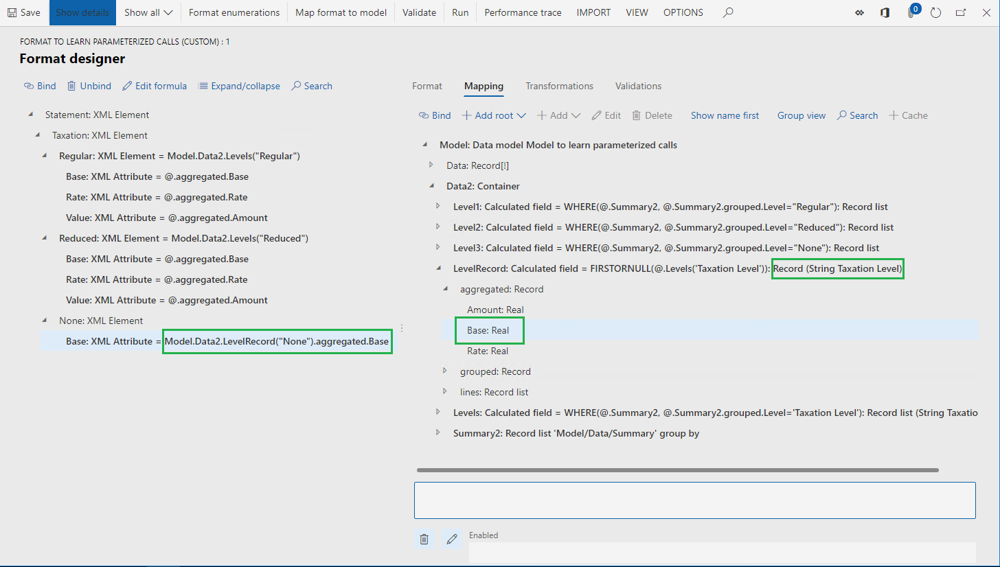

Support parameterized calls of ER data sources of the Calculated field type
This topic explains how you can design an Electronic reporting (ER) data source by using the Calculated field type. This data source may contain an ER expression that, when executed, can be controlled by the values of the parameter arguments that are configured in a binding that calls this data source. By configuring parameterized calls of such a data source, you can reuse a single data source in many bindings, which reduces the total number of data sources that must be configured in ER model mappings or ER formats. It also simplifies the configured ER component, which reduces the maintenance costs and the cost of use by other consumers.
Prerequisites
To complete the examples in this topic, you must have the following access:
Access to one of these roles:
- Electronic reporting developer
- Electronic reporting functional consultant
- System administrator
Access to Regulatory Configuration Services (RCS) that have been provisioned for the same tenant as Finance and Operations for one of the following roles:
- Electronic reporting developer
- Electronic reporting functional consultant
- System administrator
You must also download and locally store the following files.
| Content | File name |
|---|---|
| Sample ER data model configuration | Model to learn parameterized calls.version.1.xml |
| Sample ER metadata configuration | Metadata to learn parameterized calls.version.1.xml |
| Sample ER model mapping configuration | Mapping to learn parameterized calls.version.1.1.xml |
| Sample ER format configuration | Format to learn parameterized calls.version.1.1.xml |
Sign in to your RCS instance
In this example, you will create a configuration for the sample company, Litware, Inc. First, in RCS, you must complete the steps in the Create configuration providers and mark them as active procedure:
On the default dashboard, select Electronic reporting.
Select Reporting configurations.
Import the downloaded configurations to RCS in the following sequence: data model, metadata, model mapping, format. Complete the following steps for each ER configuration:
- Select Exchange.
- Select Load from XML file.
- Select Browse, and then select the required ER configuration in XML format.
- Select OK.
Review the provided ER solution
Review model mapping
In the configuration tree, expand the content of the Model to learn parameterized calls item.
Select Mapping to learn parameterized calls.
Select Designer.
Select Designer.
This ER model mapping is designed to do the following:
Fetch the list of tax codes (Tax data source) residing in the TaxTable table.
Fetch the list of tax transactions (Trans data source) residing in the TaxTrans table:
Group the list of fetched transactions (Gr data source) by tax code.
Calculate for grouped transactions following aggregated values per tax code:
- Sum of tax base values.
- Sum of tax values.
- Minimum value of applied tax rate.
The model mapping in this configuration implements the base data model for any of the ER formats created for this model and executed in Finance and Operations. As a result, the content of the Tax and Gr data sources is exposed for ER formats such as abstract data sources.

Close the Model mapping designer page.
Close the Model mapping page.
Review format
In the configuration tree, expand the content of the Model to learn parameterized calls item.
Select Format to learn parameterized calls.
Select Designer. This ER format is designed to do the following:
- Generate a tax statement in XML format.
- Present the following levels of taxation in the tax statement: regular, reduced, and none.
- Present multiple details at each taxation level, having a different number of details in each level.

Select Mapping.
Expand the Model, Data, and Summary items.
The calculated field Model.Data.Summary.Level contains the expression that returns the code of the taxation level (Regular, Reduced, None, or Other) as a text value for any tax code that can be retrieved from the Model.Data.Summary data source at run time.

Expand the Model.Data2 item.
Expand the Model.Data2.Summary2 item.
The Model.Data2.Summary2 data source is configured to group the Model.Data.Summary data source transaction details by taxation level (returned by the Model.Data.Summary.Level calculated field) and compute the aggregations.

Review the calculated fields Model.Data2.Level1, Model.Data2.Level2, and Model.Data2.Level3. These calculated fields are used to filter the Model.Data2.Summary2 records list and return only records that represent a particular taxation level.
Close the Format designer page.
Create a derived format
You can improve the provided format by adding one calculated field to filter the required taxation level instead of using the existing three fields: Model.Data2.Level1, Model.Data2.Level2, and Model.Data2.Level3. The required taxation level can be specified in the location where this new calculated field will be called.
- In the configuration tree, expand the content of the Model to learn parameterized calls item.
- Select Format to learn parameterized calls.
- Select Create configuration.
- Select Derive from Name: Format to learn parameterized calls, Microsoft.
- In the Name field, enter Format to learn parameterized calls (custom).
- Select Create configuration.
Configure a parameterized calculated field that returns a list of records
Start adding a new calculated field
- Select Designer.
- Select Expand/collapse to expand all format items.
- Select Mapping.
- Expand the Model item.
- Select the Model.Data2 item.
- Select Add.
- Select Functions\Calculated field.
- In the Name field, enter Levels.
- Select Edit formula.
Define a parameter for adding a calculated field
Select Parameters.
Select New.
In the Name field, enter Taxation Level.
In the Type field, select String.
Only primitive data types can be used to specify the type of the parameter’s argument. Therefore, Record list, Record, and Enum types cannot be used for this purpose.
The maximum number of parameters that can be specified for a single calculated field is 8.

Select OK.
By adding this parameter, you specify the condition that must be in place to call this calculated field. When you call this calculated field, you need to specify the argument of the Taxation Level parameter as a value with String format.
Make sure that you define parameters only for those calculated fields that reside in a container (either Record list, Record, or Container).
The configured parameter is available in the list of data sources for this calculated field. You can add the parameter to the configured expression by selecting Add data source.

Define an expression for adding a calculated field
In the Formula field, enter:
WHERE(@.Summary2, @.Summary2.grouped.Level =
Select the Taxation Level parameter in the list of data sources.
Select Add data source.
In the Formula field, finalize the expression as:
WHERE(@.Summary2, @.Summary2.grouped.Level = 'Taxation Level')
Select Save.

Close the Formula designer page.
Finish adding a new calculated field
- Select OK.
On the Format designer page, the configured parameterized calculated field Levels requires a String argument.

Use the configured calculated field for binding format elements
Select Model.Data2.Levels to select the configured calculated field.
Select the Statement.Taxation.Regular format element.
Select Bind.
Select Yes to confirm the replacement of the currently used data source, Level1, by the new data source, Levels, in all nested format elements of the selected format element.
Applied binding has been built as a call of the parameterized calculated field. By default, the name of the bound format element is used as an argument for parameterized calculated field under the following conditions:
- The calculated field is configured to use a single parameter.
- The data type of this parameter is defined as String.
When the name of the bound format element is blank, the data source name of this element is used in applied binding.
Select the Statement.Taxation.Reduced format element.
Select Bind.
Select Yes to confirm the replacement of the currently used data source, Level2, by the new data source, Levels, in all nested format elements under the selected format element.
Select the Statement.Taxation.None format element.
Select Bind.
Select Yes to confirm the replacement of the currently used data source, Level3, by the new data source, Levels, in all nested format elements under the selected format element.
When you specify the argument of the parameterized calculated field for the XML element representing taxation level (for example, Model.Data2.Levels("Reduced") as a text value), you don’t need to do the same for nested XML attributes—their bindings will automatically inherit the value of the argument defined on the parent level (Model.Data2.Levels.aggregated.Base, not Model.Data2.Levels("Reduced").aggregated.Base).
Recurrent calls of any parameterized calculated field are not supported.
You can select Edit formula, and change the applied-by-default argument of the parameterized calculated field in the selected binding. If this argument is missing, it can cause errors at run time — users are informed about such a situation when the current format is validated.

Configure a parameterized calculated field to return a record
When a parameterized calculated field returns a record, you need to support binding of individual fields of this record to format elements. In such cases there will be no parent binding that contains the value of an argument to call a parameterized calculated field — this value must be defined in the binding of a single record’s field.
Start adding a new calculated field
- Select the Model.Data2 item.
- Select Add.
- Select Functions\Calculated field.
- In the Name field, enter LevelRecord.
- Select Edit formula.
Define a parameter for adding a calculated field
- Select Parameters.
- Select New.
- In the Name field, enter Taxation Level.
- In the Type field, select String.
- Select OK.
Define an expression for adding a calculated field
In the Formula field, enter the following:
FIRSTORNULL(@.Levels(
Select the Taxation Level parameter.
Select Add data source.
In the Formula field, append 'Taxation Level')) to what you entered in Step 1 to finalize the expression to:
FIRSTORNULL(@.Levels('Taxation Level'))
Select Save.
Close the Formula designer page.
Finish adding a new calculated field
- Select OK.
Use the configured calculated field to bind format elements
- Expand Model.Data2.LevelRecord to select the configured calculated field.
- Expand the Model.Data2.LevelRecord.aggregated container of the configured calculated field.
- Select the Model.Data2.LevelRecord.aggregated.Base field.
- Select the Statement.Taxation.None format element.
- Select Unbind.
- Select the Statement.Taxation.None.Base format element.
- Select Bind.
- Select Edit formula.
- Change the expression to Model.Data2.LevelRecord("None").aggregated.Base.

Remove calculated fields that are not used
- Select Model.Data2.Level1.
- Select Delete.
- Select Model.Data2.Level2.
- Select Delete.
- Select Model.Data2.Level3.
- Select Delete.
- Select Save.
Note
You reused the same calculated field Model.Data2.Levels several times in format bindings. It is much easier to use and maintain a single calculated field instead of doing this for multiple similar fields.
- Close the Format designer page.
Complete adjusted version of a derived format
- In the Versions FastTab, select Change status.
- Select Complete.
Export completed version of a derived format
- Select Format to learn parameterized calls (custom) format in the configurations tree.
- In the Versions FastTab, select the completed version 1.1.1.
- Select Exchange.
- Select Export as XML file.
- Store the downloaded configuration locally, in XML format.
Test ER formats
You can run the initial and improved ER formats to make sure that configured parameterized calculated fields work properly.
Import ER configurations
You can import reviewed configurations from RCS by using the ER repository of the RCS type. If you already went through the steps in the topic, Import Electronic reporting (ER) configurations from Regulatory Configuration Services (RCS) (This is an external linThis link was changed due to HTMLfromRepoGenerator), use the configured ER repository to import configurations discussed earlier in this topic to your environment. Otherwise, follow these steps:
Select the DEMF company and on the default dashboard, select Electronic reporting.
Select Reporting configurations.
Import the configurations from Microsoft Download Center in the following sequence: data model, model mapping, format. Complete the following steps for each ER configuration:
- Select Exchange.
- Select Load from XML file.
- Select Browse to select the required ER configuration in XML format.
- Select OK.
Import the exported from RCS completed version 1.1.1 of the Format to learn parameterized calls (custom) format:
- Select Exchange.
- Select Load from XML file.
- Select Browse to select the locally stored Format to learn parameterized calls (custom) file in XML format.
- Select OK.
Run ER formats
- In the configuration tree, expand the content of the Model to learn parameterized calls item.
- Select Format to learn parameterized calls.
- Select Run on the top-most ribbon.
- Save the locally generated output.
- Select the Format to learn parameterized calls (custom) item.
- Select Run on the top-most ribbon.
- Save the generated output locally.
- Compare the contents of the generated outputs.